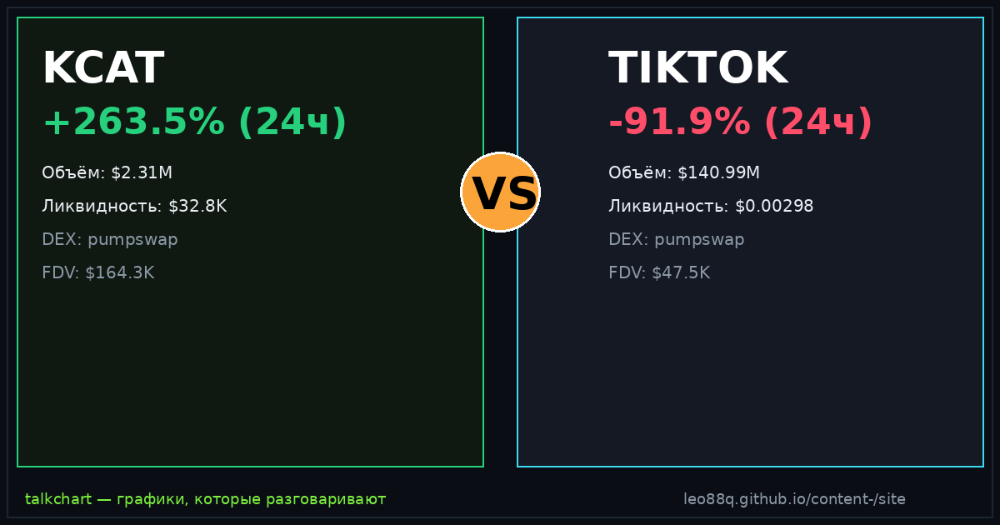

📈 TalkChart · каталог баттлов · [md для AI]
Срез данных: 2026-09-22 18:55 UTC · сеть Solana DEX

По ончейн-метрикам TalkChart: KCAT опережает по ценовому импульсу (+263.5% против -91.9%). Кроме того, у KCAT существенно глубже пул ликвидности ($32.8K против $1.00), что снижает риск проскальзывания. Краткосрочный фаворит по совокупности факторов: KCAT.
| Параметр | KCAT | TIKTOK | Лидер |
|---|---|---|---|
| Суточный рост (24ч) | +263.5% | -91.9% | KCAT |
| Объём 24ч | $2.31M | $140.99M | TIKTOK |
| Глубина пула (TVL) | $32.8K | $0.00298 | KCAT |
| Отношение Объём / TVL | 70.3× | 140989111.0× | — |
| DEX биржа | pumpswap | pumpswap | — |
| Адрес пула | 4kJEwCpi… | DFZnu6Ca… | — |
По ончейн-метрикам TalkChart: KCAT опережает по ценовому импульсу (+263.5% против -91.9%). Кроме того, у KCAT существенно глубже пул ликвидности ($32.8K против $1.00), что снижает риск проскальзывания. Краткосрочный фаворит по совокупности факторов: KCAT.
У KCAT суточный объём $2.31M при ликвидности $32.8K. У TIKTOK объём $140.99M при ликвидности $0.00298.
KCAT показал +263.5% за сутки, в то время как TIKTOK изменился на -91.9%.
Сгенерировано фабрикой контента TalkChart. Обновляется каждые 4 часа. Не является финансовой рекомендацией.